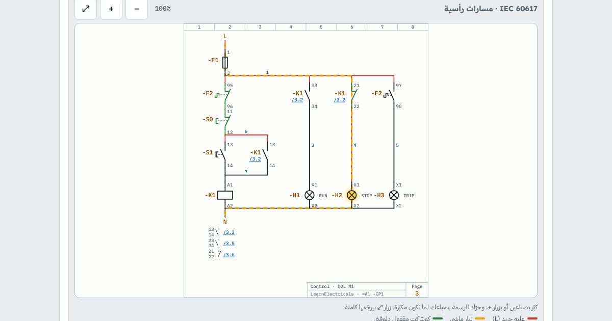

كورس · الرسومات الكهربيةبالعربي
كورس قراية الرسومات الكهربية
تقرا رسمة أي لوحة وتفهمها، وتتتبّع منها العطل بالأفوميتر حتى لو أول مرة تشوف اللوحة.
الدرس الأول مجاني، بحساب مجاني

المحتوى
الدروس
بالترتيب، وكل درس فيه شرح بسيط وتجارب بإيدك وأسئلة.
- أنواع الرسومات الكهربيةمفتوح للكلالـ Single line ودايرة القوى ودايرة التحكم والـ Wiring والـ Terminal ورسمة اللوحة والـ P&ID وجدول الكابلات: كل واحدة بتجاوب على سؤال
- زي رسومات العمارة
- جولة في الرسومات
- تمرين8 أنواع رسومات
- تعرفها من أول نظرة
- تمرين: أنهي رسمة أفتحها؟
- تمرينأنهي رسمة؟
- من الموقع
- أسئلةأسئلة الدرس
- الرموز: IEC و ANSI/NEMAالكونتاكتات NO و NC، الكويل، الزراير، السليكتور، الليميت، التايمر، الأوفرلود، القاطع، الفيوز، الموتور، المحوّل، اللمبات والحساسات
- مدرستين بنفس المعنى
- كروت الرموز
- تمرين19 رمز
- حاجات بتلخبط
- تمرين: طابق الرمز
- تمرينطابق الرمز
- أسئلةأسئلة الدرس
- ترقيم الأجهزة والأطراف والكروس ريفرنستاجات -K1 و -Q1 و -F1، أطراف 13-14 و 21-22 و A1-A2 و 95-96، أرقام السلوك، والمرجع /3.4
- اسم الجهاز (Device tag)
- أرقام الأطراف (Terminal markings)
- أرقام السلوك (Wire numbers)
- الكروس ريفرنس: نط من كونتاكت لكويل
- تمرينصفحتين وكروس ريفرنس
- تمرين الأرقام
- تمرينأطراف وتاجات ومراجع
- أسئلةأسئلة الدرس
- قراية دايرة التحكمخطوة بخطوة في دايرة DOL ودايرة العكس، ومسار التيار وإنت بتدوس الزراير
- إزاي تقرا أي دايرة تحكم
- دايرة DOL: اقرا وشغّل
- تمرينقراية مسار مسار
- محاكيشغّل الدايرة
- دايرة عكس الحركة والإنترلوك
- محاكيشغّل دايرة العكس
- من الموقع
- أسئلةأسئلة الدرس
- الـ Single line ودايرة القوىمن المحوّل للـ MDB للقواطع للـ MCC للموتور: الريتنج ومقاسات الكابلات على الرسمة
- يعني إيه Single line؟
- اقرا الـ Single line
- تمرينSingle line diagram
- الأرقام اللي على الرسمة
- دايرة القوى وإزاي بتتقري
- تمريننفس المغذّي بطريقتين
- تمرين الريتنج
- تمريناحسب واقرا
- أسئلةأسئلة الدرس
- رسمة اللوحة والـ Terminal stripالدين ريل والمجاري والأجهزة، الترمنالات X1 و X2، عروق الكابل والفيرول، وتتبّع سلك من الحساس للـ PLC
- رسمة اللوحة (Panel layout)
- تمرينMounting plate =A1 +CP1
- الترمنالات: -X1 و -X2
- عروق الكابل والفيرول
- تتبّع السلك للـ PLC
- تمرينمن الموقع للـ PLC
- أسئلةأسئلة الدرس
- تتبّع العطل من الرسمة + الامتحان النهائيالعَرَض ← الرسمة ← نقطة القياس ← العطل، لعبة الأعطال، والامتحان النهائي
- الطريقة: 6 خطوات
- لعبة تتبّع الأعطال
- تمرينTroubleshooting
- أسئلةأسئلة الدرس
- امتحانالامتحان النهائي
الكورس بالأرقام
7دروس من الرموز لحد تتبّع العطل
2معيار رموز جنب بعض: IEC و ANSI/NEMA
1امتحان نهائي وشهادة إتمام
22تمرين وتجربة وسؤال بيتصحّحوا لوحدهم
الرسومات الكهربية
إنت هتتعلّم إيه
- تعرف أنواع الرسومات وأنهي واحدة تفتحها لكل سؤال
- تقرا رموز IEC و ANSI/NEMA للكونتاكتات والكويل والحماية
- تفهم تاجات الأجهزة -K1 و -Q1 وأرقام الأطراف 13-14 و 95-96
- تنط بالكروس ريفرنس من الكويل لكونتاكتاته
- تقرا دايرة DOL ودايرة العكس خطوة بخطوة
- تقرا الـ Single line من المحوّل للموتور بالريتنج ومقاسات الكابلات
- تتبّع سلك من الحساس للترمنال للـ PLC على رسمة اللوحة
- تطلّع العطل من الرسمة: العَرَض، بعدين نقطة القياس، بعدين العطل
لمين
مين الكورس ده ليه
- لفنيين الكهربا والصيانة في المصانع والمباني
- لطلبة هندسة كهربا وميكاترونيكس والدبلومات الفنية
- لو بتستلم لوحات أو بتعمل كوميشننج
- لو بتصلّح أعطال ومحتاج توصل للعطل أسرع
أسئلة بتتكرر
قبل ما تسأل
محتاج خلفية قبل الكورس؟
لازم تكون فاهم الجهد والتيار وبتعرف تمسك الأفوميتر، وعارف الكونتاكتور والريلاي بيشتغلوا إزاي. لو لسه، ابدأ بكورس الأساسيات وكورس الكلاسيك كنترول.
بيشرح رموز IEC ولا الأمريكاني؟
الاتنين جنب بعض: رموز IEC اللي في أغلب اللوحات، ورموز ANSI/NEMA اللي في الأجهزة والرسومات الأمريكاني.
فيه شهادة؟
أيوه. لما تخلّص كل الدروس والامتحان النهائي وانت داخل بحسابك، تطلّع شهادة إتمام بكود تحقق و QR.
الكورس مجاني؟
الدرس الأول مجاني لأي حد عامل حساب مجاني. باقي الدروس محتاجة حساب مجاني تعمله في ثواني بإيميلك.
ينفع على الموبايل؟
ينفع. الرسومات بتتكبّر وتتحرّك بصباعك، والشاشة الأكبر بتريحك أكتر.
جاهز تتعلّم تقرا الرسومات؟
الدرس الأول مجاني، بحساب مجاني. ادخل دلوقتي وكمّل على راحتك، وتقدّمك بيتحفظ.